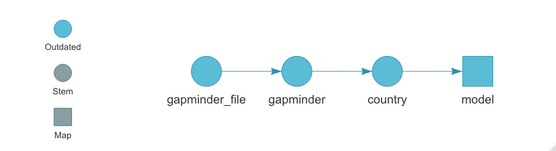
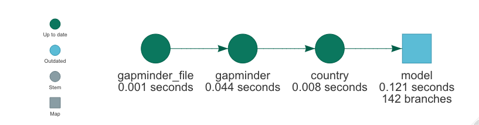

name: title class: left middle hide-count title-bg <style>.shareagain-bar { --shareagain-foreground: rgb(255, 255, 255); --shareagain-background: rgba(0, 0, 0, 0.5); --shareagain-facebook: none; --shareagain-linkedin: none; --shareagain-pinterest: none; --shareagain-pocket: none; --shareagain-reddit: none; }</style> <div class="talk-meta"> <div> <h1 class="talk-title">Reproducible and scalable data analysis workflows with targets</h1> <p class="talk-subtitle">Dynamic Function-Oriented Make-Like Declarative Pipelines for R</p> </div> <div class="talk-author"> <span> <svg style="height:0.8em;top:.04em;position:relative;fill:#FFFFFF;" viewBox="0 0 384 512"><path d="M336 0H48C21.5 0 0 21.5 0 48v416c0 26.5 21.5 48 48 48h288c26.5 0 48-21.5 48-48V48c0-26.5-21.5-48-48-48zM144 32h96c8.8 0 16 7.2 16 16s-7.2 16-16 16h-96c-8.8 0-16-7.2-16-16s7.2-16 16-16zm48 128c35.3 0 64 28.7 64 64s-28.7 64-64 64-64-28.7-64-64 28.7-64 64-64zm112 236.8c0 10.6-10 19.2-22.4 19.2H102.4C90 416 80 407.4 80 396.8v-19.2c0-31.8 30.1-57.6 67.2-57.6h5c12.3 5.1 25.7 8 39.8 8s27.6-2.9 39.8-8h5c37.1 0 67.2 25.8 67.2 57.6v19.2z"/></svg> .b[Matthew T. Warkentin], MSc. Ph.D (c) </span> <div class="talk-social pl3 pt2 pb2 lh-copy"><div> <svg style="height:0.8em;top:.04em;position:relative;fill:#FFFFFF;" viewBox="0 0 512 512"><path d="M502.3 190.8c3.9-3.1 9.7-.2 9.7 4.7V400c0 26.5-21.5 48-48 48H48c-26.5 0-48-21.5-48-48V195.6c0-5 5.7-7.8 9.7-4.7 22.4 17.4 52.1 39.5 154.1 113.6 21.1 15.4 56.7 47.8 92.2 47.6 35.7.3 72-32.8 92.3-47.6 102-74.1 131.6-96.3 154-113.7zM256 320c23.2.4 56.6-29.2 73.4-41.4 132.7-96.3 142.8-104.7 173.4-128.7 5.8-4.5 9.2-11.5 9.2-18.9v-19c0-26.5-21.5-48-48-48H48C21.5 64 0 85.5 0 112v19c0 7.4 3.4 14.3 9.2 18.9 30.6 23.9 40.7 32.4 173.4 128.7 16.8 12.2 50.2 41.8 73.4 41.4z"/></svg> <a href="mailto:warkentin@lunenfeld.ca">warkentin@lunenfeld.ca</a> </div><div> <svg style="height:0.8em;top:.04em;position:relative;fill:#FFFFFF;" viewBox="0 0 496 512"><path d="M165.9 397.4c0 2-2.3 3.6-5.2 3.6-3.3.3-5.6-1.3-5.6-3.6 0-2 2.3-3.6 5.2-3.6 3-.3 5.6 1.3 5.6 3.6zm-31.1-4.5c-.7 2 1.3 4.3 4.3 4.9 2.6 1 5.6 0 6.2-2s-1.3-4.3-4.3-5.2c-2.6-.7-5.5.3-6.2 2.3zm44.2-1.7c-2.9.7-4.9 2.6-4.6 4.9.3 2 2.9 3.3 5.9 2.6 2.9-.7 4.9-2.6 4.6-4.6-.3-1.9-3-3.2-5.9-2.9zM244.8 8C106.1 8 0 113.3 0 252c0 110.9 69.8 205.8 169.5 239.2 12.8 2.3 17.3-5.6 17.3-12.1 0-6.2-.3-40.4-.3-61.4 0 0-70 15-84.7-29.8 0 0-11.4-29.1-27.8-36.6 0 0-22.9-15.7 1.6-15.4 0 0 24.9 2 38.6 25.8 21.9 38.6 58.6 27.5 72.9 20.9 2.3-16 8.8-27.1 16-33.7-55.9-6.2-112.3-14.3-112.3-110.5 0-27.5 7.6-41.3 23.6-58.9-2.6-6.5-11.1-33.3 2.6-67.9 20.9-6.5 69 27 69 27 20-5.6 41.5-8.5 62.8-8.5s42.8 2.9 62.8 8.5c0 0 48.1-33.6 69-27 13.7 34.7 5.2 61.4 2.6 67.9 16 17.7 25.8 31.5 25.8 58.9 0 96.5-58.9 104.2-114.8 110.5 9.2 7.9 17 22.9 17 46.4 0 33.7-.3 75.4-.3 83.6 0 6.5 4.6 14.4 17.3 12.1C428.2 457.8 496 362.9 496 252 496 113.3 383.5 8 244.8 8zM97.2 352.9c-1.3 1-1 3.3.7 5.2 1.6 1.6 3.9 2.3 5.2 1 1.3-1 1-3.3-.7-5.2-1.6-1.6-3.9-2.3-5.2-1zm-10.8-8.1c-.7 1.3.3 2.9 2.3 3.9 1.6 1 3.6.7 4.3-.7.7-1.3-.3-2.9-2.3-3.9-2-.6-3.6-.3-4.3.7zm32.4 35.6c-1.6 1.3-1 4.3 1.3 6.2 2.3 2.3 5.2 2.6 6.5 1 1.3-1.3.7-4.3-1.3-6.2-2.2-2.3-5.2-2.6-6.5-1zm-11.4-14.7c-1.6 1-1.6 3.6 0 5.9 1.6 2.3 4.3 3.3 5.6 2.3 1.6-1.3 1.6-3.9 0-6.2-1.4-2.3-4-3.3-5.6-2z"/></svg> <a href="https://github.com/mattwarkentin">@mattwarkentin</a> </div><div> <svg style="height:0.8em;top:.04em;position:relative;fill:#FFFFFF;" viewBox="0 0 512 512"><path d="M459.37 151.716c.325 4.548.325 9.097.325 13.645 0 138.72-105.583 298.558-298.558 298.558-59.452 0-114.68-17.219-161.137-47.106 8.447.974 16.568 1.299 25.34 1.299 49.055 0 94.213-16.568 130.274-44.832-46.132-.975-84.792-31.188-98.112-72.772 6.498.974 12.995 1.624 19.818 1.624 9.421 0 18.843-1.3 27.614-3.573-48.081-9.747-84.143-51.98-84.143-102.985v-1.299c13.969 7.797 30.214 12.67 47.431 13.319-28.264-18.843-46.781-51.005-46.781-87.391 0-19.492 5.197-37.36 14.294-52.954 51.655 63.675 129.3 105.258 216.365 109.807-1.624-7.797-2.599-15.918-2.599-24.04 0-57.828 46.782-104.934 104.934-104.934 30.213 0 57.502 12.67 76.67 33.137 23.715-4.548 46.456-13.32 66.599-25.34-7.798 24.366-24.366 44.833-46.132 57.827 21.117-2.273 41.584-8.122 60.426-16.243-14.292 20.791-32.161 39.308-52.628 54.253z"/></svg> <a href="https://twitter.com/mattwrkntn">@mattwrkntn</a> </div></div> <span> <svg style="height:0.8em;top:.04em;position:relative;fill:#FFFFFF;" viewBox="0 0 576 512"><path d="M280.37 148.26L96 300.11V464a16 16 0 0 0 16 16l112.06-.29a16 16 0 0 0 15.92-16V368a16 16 0 0 1 16-16h64a16 16 0 0 1 16 16v95.64a16 16 0 0 0 16 16.05L464 480a16 16 0 0 0 16-16V300L295.67 148.26a12.19 12.19 0 0 0-15.3 0zM571.6 251.47L488 182.56V44.05a12 12 0 0 0-12-12h-56a12 12 0 0 0-12 12v72.61L318.47 43a48 48 0 0 0-61 0L4.34 251.47a12 12 0 0 0-1.6 16.9l25.5 31A12 12 0 0 0 45.15 301l235.22-193.74a12.19 12.19 0 0 1 15.3 0L530.9 301a12 12 0 0 0 16.9-1.6l25.5-31a12 12 0 0 0-1.7-16.93z"/></svg> Lunenfeld-Tanenbaum Research Institute, .b[.sinai-blue[Sinai] .sinai-orange[Health] .sinai-red[System]] </span> </div> <div class="talk-date"> <span> <svg style="height:0.8em;top:.04em;position:relative;fill:#FFFFFF;" viewBox="0 0 448 512"><path d="M0 464c0 26.5 21.5 48 48 48h352c26.5 0 48-21.5 48-48V192H0v272zm320-196c0-6.6 5.4-12 12-12h40c6.6 0 12 5.4 12 12v40c0 6.6-5.4 12-12 12h-40c-6.6 0-12-5.4-12-12v-40zm0 128c0-6.6 5.4-12 12-12h40c6.6 0 12 5.4 12 12v40c0 6.6-5.4 12-12 12h-40c-6.6 0-12-5.4-12-12v-40zM192 268c0-6.6 5.4-12 12-12h40c6.6 0 12 5.4 12 12v40c0 6.6-5.4 12-12 12h-40c-6.6 0-12-5.4-12-12v-40zm0 128c0-6.6 5.4-12 12-12h40c6.6 0 12 5.4 12 12v40c0 6.6-5.4 12-12 12h-40c-6.6 0-12-5.4-12-12v-40zM64 268c0-6.6 5.4-12 12-12h40c6.6 0 12 5.4 12 12v40c0 6.6-5.4 12-12 12H76c-6.6 0-12-5.4-12-12v-40zm0 128c0-6.6 5.4-12 12-12h40c6.6 0 12 5.4 12 12v40c0 6.6-5.4 12-12 12H76c-6.6 0-12-5.4-12-12v-40zM400 64h-48V16c0-8.8-7.2-16-16-16h-32c-8.8 0-16 7.2-16 16v48H160V16c0-8.8-7.2-16-16-16h-32c-8.8 0-16 7.2-16 16v48H48C21.5 64 0 85.5 0 112v48h448v-48c0-26.5-21.5-48-48-48z"/></svg> Novemer 12, 2020 </span> </div> </div> --- class: middle ```r Package: targets Title: Dynamic Function-Oriented 'Make'-Like Declarative Workflows Description: The 'targets' package is a pipeline toolkit... Authors@R: c( person( given = c("William", "Michael"), family = "Landau", role = c("aut", "cre"), email = "will.landau@gmail.com", comment = c(ORCID = "0000-0003-1878-3253") ), person( given = c("Matthew", "T."), family = "Warkentin", role = "ctb" ), person( family = "Eli Lilly and Company", role = "cph" )) ``` --- class: middle ```r Package: targets Title: Dynamic Function-Oriented 'Make'-Like Declarative Workflows Description: The 'targets' package is a pipeline toolkit... Authors@R: c( person( given = c("William", "Michael"), family = "Landau", role = c("aut", "cre"), email = "will.landau@gmail.com", comment = c(ORCID = "0000-0003-1878-3253") ), * person( * given = c("Matthew", "T."), * family = "Warkentin", * role = "ctb" * ), person( family = "Eli Lilly and Company", role = "cph" )) ``` --- .w-90.ba.b--gray-4.br2.pv2.ph3.mv5.shadow-4.absolute.animated.lightSpeedIn[ .f4[From: Lepore, Mauro] .f4[Subject: Would you be willing to review a package for rOpenSci?] .f4[To: <warkentin@lunenfeld.ca>] *** .f4[Dear Matthew, .fade[Hi, this is Mauro . I hope you and your loved ones are safe.] .b.grow[I'm writing to ask if you would be willing to review a package for rOpenSci.] .fade[As you probably know, rOpenSci conducts peer review of R packages contributed to our collection in a manner similar to journals.] .b.grow[The package targets by Will Landau provides make-like pipelines for R.] .fade[targets supersedes drake, and is submitted to rOpenSci jointly with the package tarchetypes. You can find targets and tarchetypes on GitHub here and here. We conduct our open review process via GitHub as well.] .f2[...] Thank you for your time. Sincerely, Mauro ] ] --- class: lh-copy <img src="imgs/targets.png" class="targets-pic"/> ### <svg style="height:0.8em;top:.04em;position:relative;" viewBox="0 0 496 512"><path d="M248 8C111.03 8 0 119.03 0 256s111.03 248 248 248 248-111.03 248-248S384.97 8 248 8zm0 432c-101.69 0-184-82.29-184-184 0-101.69 82.29-184 184-184 101.69 0 184 82.29 184 184 0 101.69-82.29 184-184 184zm0-312c-70.69 0-128 57.31-128 128s57.31 128 128 128 128-57.31 128-128-57.31-128-128-128zm0 192c-35.29 0-64-28.71-64-64s28.71-64 64-64 64 28.71 64 64-28.71 64-64 64z"/></svg> What is {targets}? > .f4[The `targets` package is a Make-like pipeline toolkit for Statistics and data science in R. With `targets`, you can maintain a reproducible workflow without repeating yourself. `targets` learns how your pipeline fits together, skips costly runtime for tasks that are already up to date, runs only the necessary computation, supports implicit parallel computing, abstracts files as R objects, and shows tangible evidence that the results match the underlying code and data.] --- class: lh-copy <img src="imgs/targets.png" class="targets-pic mover"/> ### <svg style="height:0.8em;top:.04em;position:relative;" viewBox="0 0 496 512"><path d="M248 8C111.03 8 0 119.03 0 256s111.03 248 248 248 248-111.03 248-248S384.97 8 248 8zm0 432c-101.69 0-184-82.29-184-184 0-101.69 82.29-184 184-184 101.69 0 184 82.29 184 184 0 101.69-82.29 184-184 184zm0-312c-70.69 0-128 57.31-128 128s57.31 128 128 128 128-57.31 128-128-57.31-128-128-128zm0 192c-35.29 0-64-28.71-64-64s28.71-64 64-64 64 28.71 64 64-28.71 64-64 64z"/></svg> What is {targets}? > .f4[The `targets` package is a Make-like pipeline toolkit for Statistics and data science in R. With `targets`, you can maintain a reproducible workflow without repeating yourself. `targets` learns how your pipeline fits together, skips costly runtime for tasks that are already up to date, runs only the necessary computation, supports implicit parallel computing, abstracts files as R objects, and shows tangible evidence that the results match the underlying code and data.] .f4.appear[ - `{targets}` is a project workflow tool that is very `R`-centric + Similar tools exist for other languages, such as `{GNU make}` and `{snakemake}` - It allows you to effectively modularize your data analysis projects to create obvious and reproducible workflows - Can easily extend your workflow to massively parallelize tasks + With some setup can use external compute resources (_e.g._ HPC) as a computational back-end for your pipeline ] --- <img src="imgs/drake.svg" class="drake-pic"/> ### <svg style="height:0.8em;top:.04em;position:relative;" viewBox="0 0 496 512"><path d="M248 8C111 8 0 119 0 256s111 248 248 248 248-111 248-248S385 8 248 8zm-96 206.6l-28.7 28.7c-14.8 14.8-37.8-7.5-22.6-22.6l28.7-28.7-28.7-28.7c-15-15 7.7-37.6 22.6-22.6l28.7 28.7 28.7-28.7c15-15 37.6 7.7 22.6 22.6L174.6 192l28.7 28.7c15.2 15.2-7.9 37.4-22.6 22.6L152 214.6zM248 416c-35.3 0-64-28.7-64-64s28.7-64 64-64 64 28.7 64 64-28.7 64-64 64zm147.3-195.3c15.2 15.2-7.9 37.4-22.6 22.6L344 214.6l-28.7 28.7c-14.8 14.8-37.8-7.5-22.6-22.6l28.7-28.7-28.7-28.7c-15-15 7.7-37.6 22.6-22.6l28.7 28.7 28.7-28.7c15-15 37.6 7.7 22.6 22.6L366.6 192l28.7 28.7z"/></svg> What about {drake}? > The `drake` package is an older and more established R-focused pipeline toolkit. It is has become a key piece of the R ecosystem, and development and support will continue. > The `targets` package borrows from past learnings, user suggestions, discussions, complaints, success stories, and feature requests, and it improves the user experience in ways that will never be possible in `drake`. -- .ml6[`targets` is more...] .f4.ml6[ - Efficient - Reproducible - Maintainable - Portable - Domain specific ] .f4.gray.fr[See the [Statement of Need](https://wlandau.github.io/targets/articles/need.html) for details.] --- class: center middle hide-count --- class: highlight-last-item ### <svg style="height:0.8em;top:.04em;position:relative;" viewBox="0 0 352 512"><path d="M96.06 454.35c.01 6.29 1.87 12.45 5.36 17.69l17.09 25.69a31.99 31.99 0 0 0 26.64 14.28h61.71a31.99 31.99 0 0 0 26.64-14.28l17.09-25.69a31.989 31.989 0 0 0 5.36-17.69l.04-38.35H96.01l.05 38.35zM0 176c0 44.37 16.45 84.85 43.56 115.78 16.52 18.85 42.36 58.23 52.21 91.45.04.26.07.52.11.78h160.24c.04-.26.07-.51.11-.78 9.85-33.22 35.69-72.6 52.21-91.45C335.55 260.85 352 220.37 352 176 352 78.61 272.91-.3 175.45 0 73.44.31 0 82.97 0 176zm176-80c-44.11 0-80 35.89-80 80 0 8.84-7.16 16-16 16s-16-7.16-16-16c0-61.76 50.24-112 112-112 8.84 0 16 7.16 16 16s-7.16 16-16 16z"/></svg> Why should I use {targets}? - .f4[.dark-blue[__Organization__] + Explicitly building your projects with as a cohesive pipeline keeps your project more organized and focused] -- - .f4[.dark-blue[__Modularity__] + Breaking tasks into small digestible code chunks makes it easier to debug your code and easier to see how all of the parts fit together] -- - .f4[.dark-blue[__Transparency and Reproducibility__] + Out of the box, you get a transparent and reproducible data analysis workflow] -- - .f4[.dark-blue[__Caching and History__] + Re-running code that doesn't change often is tedious and time-consuming. Caching results means you only run what is absolutely necessary to get up-to-date results] -- - .f4[.dark-blue[__Scalability and Parallel Computing__] + Mental models of projects break down at scale. Building projects as workflows scales well and facilitates parallel computing] --- class: center middle hide-count <img src="imgs/infographic.svg" width="100%" /> .footnote.left[Infographic from https://docs.ropensci.org/drake/] --- class: lh-copy ### <svg style="height:0.8em;top:.04em;position:relative;" viewBox="0 0 640 512"><path d="M512.1 191l-8.2 14.3c-3 5.3-9.4 7.5-15.1 5.4-11.8-4.4-22.6-10.7-32.1-18.6-4.6-3.8-5.8-10.5-2.8-15.7l8.2-14.3c-6.9-8-12.3-17.3-15.9-27.4h-16.5c-6 0-11.2-4.3-12.2-10.3-2-12-2.1-24.6 0-37.1 1-6 6.2-10.4 12.2-10.4h16.5c3.6-10.1 9-19.4 15.9-27.4l-8.2-14.3c-3-5.2-1.9-11.9 2.8-15.7 9.5-7.9 20.4-14.2 32.1-18.6 5.7-2.1 12.1.1 15.1 5.4l8.2 14.3c10.5-1.9 21.2-1.9 31.7 0L552 6.3c3-5.3 9.4-7.5 15.1-5.4 11.8 4.4 22.6 10.7 32.1 18.6 4.6 3.8 5.8 10.5 2.8 15.7l-8.2 14.3c6.9 8 12.3 17.3 15.9 27.4h16.5c6 0 11.2 4.3 12.2 10.3 2 12 2.1 24.6 0 37.1-1 6-6.2 10.4-12.2 10.4h-16.5c-3.6 10.1-9 19.4-15.9 27.4l8.2 14.3c3 5.2 1.9 11.9-2.8 15.7-9.5 7.9-20.4 14.2-32.1 18.6-5.7 2.1-12.1-.1-15.1-5.4l-8.2-14.3c-10.4 1.9-21.2 1.9-31.7 0zm-10.5-58.8c38.5 29.6 82.4-14.3 52.8-52.8-38.5-29.7-82.4 14.3-52.8 52.8zM386.3 286.1l33.7 16.8c10.1 5.8 14.5 18.1 10.5 29.1-8.9 24.2-26.4 46.4-42.6 65.8-7.4 8.9-20.2 11.1-30.3 5.3l-29.1-16.8c-16 13.7-34.6 24.6-54.9 31.7v33.6c0 11.6-8.3 21.6-19.7 23.6-24.6 4.2-50.4 4.4-75.9 0-11.5-2-20-11.9-20-23.6V418c-20.3-7.2-38.9-18-54.9-31.7L74 403c-10 5.8-22.9 3.6-30.3-5.3-16.2-19.4-33.3-41.6-42.2-65.7-4-10.9.4-23.2 10.5-29.1l33.3-16.8c-3.9-20.9-3.9-42.4 0-63.4L12 205.8c-10.1-5.8-14.6-18.1-10.5-29 8.9-24.2 26-46.4 42.2-65.8 7.4-8.9 20.2-11.1 30.3-5.3l29.1 16.8c16-13.7 34.6-24.6 54.9-31.7V57.1c0-11.5 8.2-21.5 19.6-23.5 24.6-4.2 50.5-4.4 76-.1 11.5 2 20 11.9 20 23.6v33.6c20.3 7.2 38.9 18 54.9 31.7l29.1-16.8c10-5.8 22.9-3.6 30.3 5.3 16.2 19.4 33.2 41.6 42.1 65.8 4 10.9.1 23.2-10 29.1l-33.7 16.8c3.9 21 3.9 42.5 0 63.5zm-117.6 21.1c59.2-77-28.7-164.9-105.7-105.7-59.2 77 28.7 164.9 105.7 105.7zm243.4 182.7l-8.2 14.3c-3 5.3-9.4 7.5-15.1 5.4-11.8-4.4-22.6-10.7-32.1-18.6-4.6-3.8-5.8-10.5-2.8-15.7l8.2-14.3c-6.9-8-12.3-17.3-15.9-27.4h-16.5c-6 0-11.2-4.3-12.2-10.3-2-12-2.1-24.6 0-37.1 1-6 6.2-10.4 12.2-10.4h16.5c3.6-10.1 9-19.4 15.9-27.4l-8.2-14.3c-3-5.2-1.9-11.9 2.8-15.7 9.5-7.9 20.4-14.2 32.1-18.6 5.7-2.1 12.1.1 15.1 5.4l8.2 14.3c10.5-1.9 21.2-1.9 31.7 0l8.2-14.3c3-5.3 9.4-7.5 15.1-5.4 11.8 4.4 22.6 10.7 32.1 18.6 4.6 3.8 5.8 10.5 2.8 15.7l-8.2 14.3c6.9 8 12.3 17.3 15.9 27.4h16.5c6 0 11.2 4.3 12.2 10.3 2 12 2.1 24.6 0 37.1-1 6-6.2 10.4-12.2 10.4h-16.5c-3.6 10.1-9 19.4-15.9 27.4l8.2 14.3c3 5.2 1.9 11.9-2.8 15.7-9.5 7.9-20.4 14.2-32.1 18.6-5.7 2.1-12.1-.1-15.1-5.4l-8.2-14.3c-10.4 1.9-21.2 1.9-31.7 0zM501.6 431c38.5 29.6 82.4-14.3 52.8-52.8-38.5-29.6-82.4 14.3-52.8 52.8z"/></svg> Using {targets} - All functions in `{targets}` are prefixed by `tar_*`, which makes it easy to work with the package due to low cognitive friction -- - Your 80/20 functions... - `tar_target()` - The unit of interest; targets are the building blocks of your pipeline and represent meaningful components of your project -- - `tar_pipeline()` - Contains the complete set of targets to be included in the pipeline -- - `tar_option_set()` - Set global configuration options, such as default storage formats, packages, memory allocation, storage, deployment...etc. -- - `tar_make()` - Inspects your code/pipeline to understand the dependencies, and builds the pipeline in a separate clean `R` session --- class: middle ```r tar_target( name, command, pattern = NULL, tidy_eval = targets::tar_option_get("tidy_eval"), packages = targets::tar_option_get("packages"), library = targets::tar_option_get("library"), format = targets::tar_option_get("format"), iteration = targets::tar_option_get("iteration"), error = targets::tar_option_get("error"), memory = targets::tar_option_get("memory"), garbage_collection = targets::tar_option_get("garbage_collection"), deployment = targets::tar_option_get("deployment"), priority = targets::tar_option_get("priority"), resources = targets::tar_option_get("resources"), storage = targets::tar_option_get("storage"), retrieval = targets::tar_option_get("retrieval"), cue = targets::tar_option_get("cue") ) ``` --- class: middle <div class="name-tip w-30 absolute ba pa2 br3 z-1 tc bg-green white tip-reveal shadow-4 bw1 b--black">Unique name given to a target. TIP: A common prefix can make it easier to refer to families of targets</div><div class="command-tip w-30 absolute ba pa2 br3 z-2 tc bg-blue white tip-reveal shadow-4 bw1 b--black">R code that produces a target value</div> ```r tar_target( * name, * command, pattern = NULL, tidy_eval = targets::tar_option_get("tidy_eval"), packages = targets::tar_option_get("packages"), library = targets::tar_option_get("library"), format = targets::tar_option_get("format"), iteration = targets::tar_option_get("iteration"), error = targets::tar_option_get("error"), memory = targets::tar_option_get("memory"), garbage_collection = targets::tar_option_get("garbage_collection"), deployment = targets::tar_option_get("deployment"), priority = targets::tar_option_get("priority"), resources = targets::tar_option_get("resources"), storage = targets::tar_option_get("storage"), retrieval = targets::tar_option_get("retrieval"), cue = targets::tar_option_get("cue") ) ``` --- class: middle ```r tar_option_set( tidy_eval = NULL, packages = NULL, library = NULL, envir = NULL, format = NULL, iteration = NULL, error = NULL, memory = NULL, garbage_collection = NULL, deployment = NULL, priority = NULL, resources = NULL, storage = NULL, retrieval = NULL, cue = NULL, debug = NULL ) ``` --- class: middle <div class="pkg-tip w-30 absolute ba pa2 br3 z-1 tc bg-red white tip-reveal shadow-4 bw1 b--black">Character vector of packages that will be loaded before building your pipeline</div> ```r tar_option_set( tidy_eval = NULL, * packages = NULL, library = NULL, envir = NULL, format = NULL, iteration = NULL, error = NULL, memory = NULL, garbage_collection = NULL, deployment = NULL, priority = NULL, resources = NULL, storage = NULL, retrieval = NULL, cue = NULL, debug = NULL ) ``` --- class: middle ```r tar_pipeline(...) ``` - `tar_pipeline()` simply accepts an arbitrary number of `tar_target()` objects, or a list thereof. .o-0[ Example: ```r # _targets.R tar_pipeline( tar_target(first, f1()), tar_target(second, f2()), tar_target(third, f3(first, second)) ) ``` - .b[Note:] The order of targets inside `tar_pipeline()` does NOT matter. `{targets}` is smart enough to infer the topology and learn dependencies ] --- class: middle ```r tar_pipeline(...) ``` - `tar_pipeline()` simply accepts an arbitrary number of `tar_target()` objects, or a list thereof. .b[Example:] ```r # _targets.R tar_pipeline( tar_target(first, f1()), tar_target(second, f2()), tar_target(third, f3(first, second)) ) ``` - .b[Note:] The order of targets inside `tar_pipeline()` does NOT matter. `{targets}` is smart enough to infer the topology and learn dependencies --- ### <svg style="height:0.8em;top:.04em;position:relative;" viewBox="0 0 512 512"><path d="M80 368H16a16 16 0 0 0-16 16v64a16 16 0 0 0 16 16h64a16 16 0 0 0 16-16v-64a16 16 0 0 0-16-16zm0-320H16A16 16 0 0 0 0 64v64a16 16 0 0 0 16 16h64a16 16 0 0 0 16-16V64a16 16 0 0 0-16-16zm0 160H16a16 16 0 0 0-16 16v64a16 16 0 0 0 16 16h64a16 16 0 0 0 16-16v-64a16 16 0 0 0-16-16zm416 176H176a16 16 0 0 0-16 16v32a16 16 0 0 0 16 16h320a16 16 0 0 0 16-16v-32a16 16 0 0 0-16-16zm0-320H176a16 16 0 0 0-16 16v32a16 16 0 0 0 16 16h320a16 16 0 0 0 16-16V80a16 16 0 0 0-16-16zm0 160H176a16 16 0 0 0-16 16v32a16 16 0 0 0 16 16h320a16 16 0 0 0 16-16v-32a16 16 0 0 0-16-16z"/></svg> Imperative scripting ```yaml R/ ├── 01-data.R ├── 02-clean.R ├── 03-fit-model.R ├── 04-summarize-results.R └── 05-tables-figs.R run_scripts.R ``` -- - Does not scale well to larger/complicated projects - You are in charge of storing/loading important objects - Everything needs to be ran every time --- ### <svg style="height:0.8em;top:.04em;position:relative;" viewBox="0 0 512 512"><path d="M204.3 5C104.9 24.4 24.8 104.3 5.2 203.4c-37 187 131.7 326.4 258.8 306.7 41.2-6.4 61.4-54.6 42.5-91.7-23.1-45.4 9.9-98.4 60.9-98.4h79.7c35.8 0 64.8-29.6 64.9-65.3C511.5 97.1 368.1-26.9 204.3 5zM96 320c-17.7 0-32-14.3-32-32s14.3-32 32-32 32 14.3 32 32-14.3 32-32 32zm32-128c-17.7 0-32-14.3-32-32s14.3-32 32-32 32 14.3 32 32-14.3 32-32 32zm128-64c-17.7 0-32-14.3-32-32s14.3-32 32-32 32 14.3 32 32-14.3 32-32 32zm128 64c-17.7 0-32-14.3-32-32s14.3-32 32-32 32 14.3 32 32-14.3 32-32 32z"/></svg> Guiding Design Principles > Defining good targets is more of an art than a science, and it requires personal judgement and context specific to your use case. -- - Generally speaking, a good target is... 1. Long enough to eat up a decent chunk of runtime, and 1. Small enough that `tar_make()` frequently skips it, and 1. Meaningful to your project, and 1. A well-behaved `R` object that can be stored. -- <br><br> - A `{targets}` pipeline is a __directed acyclic graph__ (DAG) showing all of the tasks (nodes) and their interrelationships (vertices) --- ### <svg style="height:0.8em;top:.04em;position:relative;" viewBox="0 0 512 512"><path d="M504 256c0 136.967-111.033 248-248 248S8 392.967 8 256 119.033 8 256 8s248 111.033 248 248zM227.314 387.314l184-184c6.248-6.248 6.248-16.379 0-22.627l-22.627-22.627c-6.248-6.249-16.379-6.249-22.628 0L216 308.118l-70.059-70.059c-6.248-6.248-16.379-6.248-22.628 0l-22.627 22.627c-6.248 6.248-6.248 16.379 0 22.627l104 104c6.249 6.249 16.379 6.249 22.628.001z"/></svg> Think Functional - A key design consideration when working with `{targets}` is to embrace functions - Try to abstract important steps in your workflow into functions that do a single obvious task - At first, this may seem like extra work, but the downstream payoff is huge -- ```r find_outcomes <- function(data, icd_code) { # <<some R code>> return(data_with_outcomes) } ``` ```r find_outcomes(my_data, "C34") ``` - We now have a function that is easy to maintain and can be used in our `targets` pipeline --- ### <svg style="height:0.8em;top:.04em;position:relative;" viewBox="0 0 640 512"><path d="M128 352H32c-17.67 0-32 14.33-32 32v96c0 17.67 14.33 32 32 32h96c17.67 0 32-14.33 32-32v-96c0-17.67-14.33-32-32-32zm-24-80h192v48h48v-48h192v48h48v-57.59c0-21.17-17.23-38.41-38.41-38.41H344v-64h40c17.67 0 32-14.33 32-32V32c0-17.67-14.33-32-32-32H256c-17.67 0-32 14.33-32 32v96c0 17.67 14.33 32 32 32h40v64H94.41C73.23 224 56 241.23 56 262.41V320h48v-48zm264 80h-96c-17.67 0-32 14.33-32 32v96c0 17.67 14.33 32 32 32h96c17.67 0 32-14.33 32-32v-96c0-17.67-14.33-32-32-32zm240 0h-96c-17.67 0-32 14.33-32 32v96c0 17.67 14.33 32 32 32h96c17.67 0 32-14.33 32-32v-96c0-17.67-14.33-32-32-32z"/></svg> Suggested Project Structure - Everyone has their own preferred way of organizing their files and projects. This is only a suggested way based on my workflow using `{targets}` for building `R`-centric projects However, - `_targets.R` must exist at the root of the project ```r ├── R/ │ ├── functions.R ├── _targets.R ├── run.R ├── project-name.Rproj ``` -- - A more mature project may have more subdirectories and files, but this serves as the skeleton for most/all of my `{targets}` projects --- class: middle ```r ├── R/ *├── _targets.R ├── run.R ├── project-name.Rproj ``` ```r # _targets.R library(targets) # Load functions source("functions.R") # Set global options tar_option_set(...) # Define targets/pipeline tar_pipeline(...) ``` --- class: middle ```r ├── R/ ├── _targets.R *├── run.R ├── project-name.Rproj ``` ```r # run.R targets::tar_make() ``` --- class: middle ```r *├── R/ ├── _targets.R ├── run.R ├── project-name.Rproj ``` ```r ├── R/ │ ├── clean-data.R │ ├── cv-splits.R │ ├── fit-model.R │ ├── summarize-results.R │ ├── build-report.R ``` - I suggest having one script per function/task - Name the script the same name as the function contained therein --- class: middle ```r *├── R/ ├── _targets.R ├── run.R ├── project-name.Rproj ``` ```r ├── R/ *│ ├── clean-data.R │ ├── cv-splits.R │ ├── fit-model.R │ ├── summarize-results.R │ ├── build-report.R ``` ```r # clean-data.R clean_data <- function(data) { "<<some R code...>>" return(data_clean) } ``` --- ### <svg style="height:0.8em;top:.04em;position:relative;" viewBox="0 0 448 512"><path d="M433.941 129.941l-83.882-83.882A48 48 0 0 0 316.118 32H48C21.49 32 0 53.49 0 80v352c0 26.51 21.49 48 48 48h352c26.51 0 48-21.49 48-48V163.882a48 48 0 0 0-14.059-33.941zM224 416c-35.346 0-64-28.654-64-64 0-35.346 28.654-64 64-64s64 28.654 64 64c0 35.346-28.654 64-64 64zm96-304.52V212c0 6.627-5.373 12-12 12H76c-6.627 0-12-5.373-12-12V108c0-6.627 5.373-12 12-12h228.52c3.183 0 6.235 1.264 8.485 3.515l3.48 3.48A11.996 11.996 0 0 1 320 111.48z"/></svg> Data Store - After you run your pipeline the first time the data store is created... -- ```r *_targets/ *│ ├── meta/ *│ ├── meta *│ ├── progress *│ ├── objects/ *│ ├── target_name_1 *│ ├── target_name_2 ├── R/ ├── _targets.R ├── run.R ├── project-name.Rproj ``` - It is NOT recommended to directly interact with the `_targets/` directory. Instead, inspect the data store and load objects using the suite of available helper functions --- ### <svg style="height:0.8em;top:.04em;position:relative;" viewBox="0 0 640 512"><path d="M544 160v64h32v64h-32v64H64V160h480m16-64H48c-26.51 0-48 21.49-48 48v224c0 26.51 21.49 48 48 48h512c26.51 0 48-21.49 48-48v-16h8c13.255 0 24-10.745 24-24V184c0-13.255-10.745-24-24-24h-8v-16c0-26.51-21.49-48-48-48zm-336 96H96v128h128V192z"/></svg> A simple example... <img src="imgs/penguins.png" class="absolute z-1 w-20 penguins grow"/><img src="imgs/culmen_depth.png" class="absolute z-1 w-30 bills grow"/><div class="f4 gray allison"> Artwork by <a href="https://twitter.com/allison_horst">@allison_horst</a> </div> ```r # _targets.R tar_pipeline( tar_target( data, palmerpenguins::penguins ), tar_target( model, lm(bill_length_mm ~ species, data = data) ) ) ``` -- ```r tar_make() ``` ```r ● run target data ● run target model ``` --- ### <svg style="height:0.8em;top:.04em;position:relative;" viewBox="0 0 640 512"><path d="M544 160v64h32v64h-32v64H64V160h480m16-64H48c-26.51 0-48 21.49-48 48v224c0 26.51 21.49 48 48 48h512c26.51 0 48-21.49 48-48v-16h8c13.255 0 24-10.745 24-24V184c0-13.255-10.745-24-24-24h-8v-16c0-26.51-21.49-48-48-48zm-336 96H96v128h128V192z"/></svg> A simple example... ```r tar_make() ``` ```r ✓ skip target data ✓ skip target model ✓ Already up to date. ``` A look at the data store... ```r _targets/ ├── meta │ ├── meta │ └── progress └── objects ├── data └── model ``` --- class: middle ```r tar_read(data) # compare with tar_load() ``` ```r #> # A tibble: 344 x 8 #> species island bill_length_mm bill_depth_mm flipper_length_… #> <fct> <fct> <dbl> <dbl> <int> #> 1 Adelie Torge… 39.1 18.7 181 #> 2 Adelie Torge… 39.5 17.4 186 #> 3 Adelie Torge… 40.3 18 195 #> 4 Adelie Torge… NA NA NA #> 5 Adelie Torge… 36.7 19.3 193 #> 6 Adelie Torge… 39.3 20.6 190 #> 7 Adelie Torge… 38.9 17.8 181 #> 8 Adelie Torge… 39.2 19.6 195 #> 9 Adelie Torge… 34.1 18.1 193 #> 10 Adelie Torge… 42 20.2 190 #> # … with 334 more rows, and 3 more variables: body_mass_g <int>, #> # sex <fct>, year <int> ``` .f4[.b[NOTE:] `tar_read()` reads objects into memory, but the user must assign the object into a variable for persistence; `tar_load()` reads and assigns objects into a variable of the same name] --- class: middle ```r tar_read(model) # compare with tar_load() ``` ```r #> Call: #> lm(formula = bill_length_mm ~ species, data = data) #> #> Coefficients: #> (Intercept) speciesChinstrap speciesGentoo #> 38.791 10.042 8.713 ``` .f4[.b[NOTE:] `tar_read()` reads objects into memory, but the user must assign the object into a variable for persistence; `tar_load()` reads and assigns objects into a variable of the same name] --- ```r # _targets.R tar_pipeline( tar_target( data, palmerpenguins::penguins ), tar_target( model, lm(bill_length_mm ~ species, data = data) ), * tar_target( * summary, * summary(model) * ) ) tar_make() ``` ```r ✓ skip target data ✓ skip target model ● run target summary ``` --- ### <svg style="height:0.8em;top:.04em;position:relative;" viewBox="0 0 384 512"><path d="M224 136V0H24C10.7 0 0 10.7 0 24v464c0 13.3 10.7 24 24 24h336c13.3 0 24-10.7 24-24V160H248c-13.2 0-24-10.8-24-24zm64 236c0 6.6-5.4 12-12 12H108c-6.6 0-12-5.4-12-12v-8c0-6.6 5.4-12 12-12h168c6.6 0 12 5.4 12 12v8zm0-64c0 6.6-5.4 12-12 12H108c-6.6 0-12-5.4-12-12v-8c0-6.6 5.4-12 12-12h168c6.6 0 12 5.4 12 12v8zm0-72v8c0 6.6-5.4 12-12 12H108c-6.6 0-12-5.4-12-12v-8c0-6.6 5.4-12 12-12h168c6.6 0 12 5.4 12 12zm96-114.1v6.1H256V0h6.1c6.4 0 12.5 2.5 17 7l97.9 98c4.5 4.5 7 10.6 7 16.9z"/></svg> Depending on external files - Sometimes your pipeline might need to look outward and depend on "external" files + A common example is depending on a CSV/Excel or PLINK file + The same technique applies if your code .b[produces] a file -- ```r # _targets.R tar_pipeline( tar_target( data, read_csv("path/to/data.csv") ) ) ``` --- ### <svg style="height:0.8em;top:.04em;position:relative;" viewBox="0 0 384 512"><path d="M224 136V0H24C10.7 0 0 10.7 0 24v464c0 13.3 10.7 24 24 24h336c13.3 0 24-10.7 24-24V160H248c-13.2 0-24-10.8-24-24zm64 236c0 6.6-5.4 12-12 12H108c-6.6 0-12-5.4-12-12v-8c0-6.6 5.4-12 12-12h168c6.6 0 12 5.4 12 12v8zm0-64c0 6.6-5.4 12-12 12H108c-6.6 0-12-5.4-12-12v-8c0-6.6 5.4-12 12-12h168c6.6 0 12 5.4 12 12v8zm0-72v8c0 6.6-5.4 12-12 12H108c-6.6 0-12-5.4-12-12v-8c0-6.6 5.4-12 12-12h168c6.6 0 12 5.4 12 12zm96-114.1v6.1H256V0h6.1c6.4 0 12.5 2.5 17 7l97.9 98c4.5 4.5 7 10.6 7 16.9z"/></svg> Depending on external files - Sometimes your pipeline might need to look outward and depend on "external" files + A common example is depending on a CSV/Excel or PLINK file + The same technique applies if your code .b[produces] a file ```r # _targets.R tar_pipeline( tar_target( data_file, "path/to/data.csv", format = "file" ), tar_target( data, read_csv(data_file) ) ) ``` --- ### <svg style="height:0.8em;top:.04em;position:relative;" viewBox="0 0 384 512"><path d="M378.31 378.49L298.42 288h30.63c9.01 0 16.98-5 20.78-13.06 3.8-8.04 2.55-17.26-3.28-24.05L268.42 160h28.89c9.1 0 17.3-5.35 20.86-13.61 3.52-8.13 1.86-17.59-4.24-24.08L203.66 4.83c-6.03-6.45-17.28-6.45-23.32 0L70.06 122.31c-6.1 6.49-7.75 15.95-4.24 24.08C69.38 154.65 77.59 160 86.69 160h28.89l-78.14 90.91c-5.81 6.78-7.06 15.99-3.27 24.04C37.97 283 45.93 288 54.95 288h30.63L5.69 378.49c-6 6.79-7.36 16.09-3.56 24.26 3.75 8.05 12 13.25 21.01 13.25H160v24.45l-30.29 48.4c-5.32 10.64 2.42 23.16 14.31 23.16h95.96c11.89 0 19.63-12.52 14.31-23.16L224 440.45V416h136.86c9.01 0 17.26-5.2 21.01-13.25 3.8-8.17 2.44-17.47-3.56-24.26z"/></svg> Dynamic branching > The `targets` packages supports shorthand to create large pipelines. Dynamic branching defines new targets (i.e. branches) while the pipeline is running, and those definitions can be based on prior results from upstream targets. -- .b[Patterns:] Creates .i[branches] (i.e. sub-targets) by repeating a task over a set of arguments ```r # _targets.R # Draws from random Normal of various sizes tar_pipeline( tar_target(size, seq(1, 1000, by = 100)), tar_target(draws, rnorm(size), pattern = map(size)) ) ``` - By default, `targets` will aggregate each of the sub-targets of `draws` using `vctrs::vec_c()`. In this example, this will combine all of our draws into one single vector. + We could combine into a list by adding `iteration = "list"`, instead --- ### <svg style="height:0.8em;top:.04em;position:relative;" viewBox="0 0 384 512"><path d="M378.31 378.49L298.42 288h30.63c9.01 0 16.98-5 20.78-13.06 3.8-8.04 2.55-17.26-3.28-24.05L268.42 160h28.89c9.1 0 17.3-5.35 20.86-13.61 3.52-8.13 1.86-17.59-4.24-24.08L203.66 4.83c-6.03-6.45-17.28-6.45-23.32 0L70.06 122.31c-6.1 6.49-7.75 15.95-4.24 24.08C69.38 154.65 77.59 160 86.69 160h28.89l-78.14 90.91c-5.81 6.78-7.06 15.99-3.27 24.04C37.97 283 45.93 288 54.95 288h30.63L5.69 378.49c-6 6.79-7.36 16.09-3.56 24.26 3.75 8.05 12 13.25 21.01 13.25H160v24.45l-30.29 48.4c-5.32 10.64 2.42 23.16 14.31 23.16h95.96c11.89 0 19.63-12.52 14.31-23.16L224 440.45V416h136.86c9.01 0 17.26-5.2 21.01-13.25 3.8-8.17 2.44-17.47-3.56-24.26z"/></svg> Dynamic branching .b[Iteration]: patterns repeat tasks and iterate over arguments (e.g. using `map()`), and there are two important aspects of iteration... 1. .b[Branching] + How should `targets` slice the data when creating branches? 1. .b[Aggregation] + How should `targets` combine the results after completing branches? -- - `iteration = "vector"` + .f4[Branches are created with `vctrs::vec_slice(x, i)` and aggregated with `vctrs::vec_c(...)`] - `iteration = "list"` + .f4[Branches are created with `list[[i]]` and aggregated with `list(...)`] --- class: lh-copy ### <svg style="height:0.8em;top:.04em;position:relative;" viewBox="0 0 640 512"><path d="M544 160v64h32v64h-32v64H64V160h480m16-64H48c-26.51 0-48 21.49-48 48v224c0 26.51 21.49 48 48 48h512c26.51 0 48-21.49 48-48v-16h8c13.255 0 24-10.745 24-24V184c0-13.255-10.745-24-24-24h-8v-16c0-26.51-21.49-48-48-48zm-144 96H96v128h320V192z"/></svg> Advanced Example: Dynamic Branching - We will set up a more advanced example using dynamic branching - Let's fit a model for how life expectancy has changed over time for each country in the `gapminder` data set + How many countries are in our data set? Not sure and it doesn't matter `$$lifeExpectancy = time + \epsilon$$` - After, we will adjust our life expectancy model for GDP per capita --- ```r # _targets.R tar_pipeline( tar_target( gapminder_file, "/Users/matt/Library/R/4.0/library/gapminder/extdata/gapminder.tsv", format = "file" ), tar_target( gapminder, read_tsv(gapminder_file) ), tar_target( country, group_split(gapminder, country), # returns a list of data frames iteration = "list" ), tar_target( model, lm(lifeExp ~ year, data = country), pattern = map(country), iteration = "list" ) ) ``` --- ### <svg style="height:0.8em;top:.04em;position:relative;" viewBox="0 0 640 512"><path d="M544 160v64h32v64h-32v64H64V160h480m16-64H48c-26.51 0-48 21.49-48 48v224c0 26.51 21.49 48 48 48h512c26.51 0 48-21.49 48-48v-16h8c13.255 0 24-10.745 24-24V184c0-13.255-10.745-24-24-24h-8v-16c0-26.51-21.49-48-48-48zm-144 96H96v128h320V192z"/></svg> Advanced Example ```r tar_visnetwork() ```  --- ### <svg style="height:0.8em;top:.04em;position:relative;" viewBox="0 0 640 512"><path d="M544 160v64h32v64h-32v64H64V160h480m16-64H48c-26.51 0-48 21.49-48 48v224c0 26.51 21.49 48 48 48h512c26.51 0 48-21.49 48-48v-16h8c13.255 0 24-10.745 24-24V184c0-13.255-10.745-24-24-24h-8v-16c0-26.51-21.49-48-48-48zm-144 96H96v128h320V192z"/></svg> Advanced Example ```r tar_make() ``` ```r ● run target gapminder_file ● run target gapminder ● run target country ● run branch model_55cab078 ● run branch model_137fa27c ● run branch model_11168a7a ● run branch model_4fa278a7 ● run branch model_f0b9128a ... ● run branch model_b1ee577e ● run branch model_af9237c1 ● run branch model_ab0302f4 ● run branch model_0b45f3c6 ● run branch model_f4b18a5b ``` --- ```r # _targets.R tar_pipeline( tar_target( gapminder_file, "/Users/matt/Library/R/4.0/library/gapminder/extdata/gapminder.tsv", format = "file" ), tar_target( gapminder, read_tsv(gapminder_file) ), tar_target( country, group_split(gapminder, country), iteration = "list" ), tar_target( model, * lm(lifeExp ~ year + gdpPercap, data = country), pattern = map(country), iteration = "list" ) ) ``` --- ### <svg style="height:0.8em;top:.04em;position:relative;" viewBox="0 0 640 512"><path d="M544 160v64h32v64h-32v64H64V160h480m16-64H48c-26.51 0-48 21.49-48 48v224c0 26.51 21.49 48 48 48h512c26.51 0 48-21.49 48-48v-16h8c13.255 0 24-10.745 24-24V184c0-13.255-10.745-24-24-24h-8v-16c0-26.51-21.49-48-48-48zm-144 96H96v128h320V192z"/></svg> Advanced Example ```r tar_visnetwork(label = c("branches", "time")) ```  --- ### <svg style="height:0.8em;top:.04em;position:relative;" viewBox="0 0 640 512"><path d="M544 160v64h32v64h-32v64H64V160h480m16-64H48c-26.51 0-48 21.49-48 48v224c0 26.51 21.49 48 48 48h512c26.51 0 48-21.49 48-48v-16h8c13.255 0 24-10.745 24-24V184c0-13.255-10.745-24-24-24h-8v-16c0-26.51-21.49-48-48-48zm-144 96H96v128h320V192z"/></svg> Advanced Example ```r # _targets.R options(clustermq.scheduler = "multiprocess") ``` ```r tar_make_clustermq(workers = 6) ``` -- ```r ✓ skip target gapminder_file ✓ skip target gapminder ✓ skip target country ● run branch model_137fa27c ● run branch model_11168a7a ● run branch model_4fa278a7 ... ● run branch model_0b45f3c6 ● run branch model_f4b18a5b ● run branch model_55cab078 Master: [11.1s 77.9% CPU]; Worker: [avg 20.9% CPU, max 8110571.0 Mb] ``` --- ### <svg style="height:0.8em;top:.04em;position:relative;" viewBox="0 0 512 512"><path d="M480 160H32c-17.673 0-32-14.327-32-32V64c0-17.673 14.327-32 32-32h448c17.673 0 32 14.327 32 32v64c0 17.673-14.327 32-32 32zm-48-88c-13.255 0-24 10.745-24 24s10.745 24 24 24 24-10.745 24-24-10.745-24-24-24zm-64 0c-13.255 0-24 10.745-24 24s10.745 24 24 24 24-10.745 24-24-10.745-24-24-24zm112 248H32c-17.673 0-32-14.327-32-32v-64c0-17.673 14.327-32 32-32h448c17.673 0 32 14.327 32 32v64c0 17.673-14.327 32-32 32zm-48-88c-13.255 0-24 10.745-24 24s10.745 24 24 24 24-10.745 24-24-10.745-24-24-24zm-64 0c-13.255 0-24 10.745-24 24s10.745 24 24 24 24-10.745 24-24-10.745-24-24-24zm112 248H32c-17.673 0-32-14.327-32-32v-64c0-17.673 14.327-32 32-32h448c17.673 0 32 14.327 32 32v64c0 17.673-14.327 32-32 32zm-48-88c-13.255 0-24 10.745-24 24s10.745 24 24 24 24-10.745 24-24-10.745-24-24-24zm-64 0c-13.255 0-24 10.745-24 24s10.745 24 24 24 24-10.745 24-24-10.745-24-24-24z"/></svg> High-performance Computing .lh-copy[> `targets` supports high-performance computing with the `tar_make_clustermq()` and `tar_make_future()` functions. These functions are like `tar_make()`, but they allow multiple targets to run simultaneously over parallel workers. These workers can be processes on your local machine, or they can be jobs on a computing cluster. The main process automatically sends a target to a worker as soon as > 1. The worker is available, and 1. All the target’s upstream dependency targets have been checked or built. ] --- class: center middle hide-count background-color: black <script src="https://fast.wistia.com/embed/medias/ycczhxwkjw.jsonp" async></script><script src="https://fast.wistia.com/assets/external/E-v1.js" async></script><div class="wistia_responsive_padding" style="padding:56.21% 0 0 0;position:relative;"><div class="wistia_responsive_wrapper" style="height:100%;left:0;position:absolute;top:0;width:100%;"><div class="wistia_embed wistia_async_ycczhxwkjw videoFoam=true" style="height:100%;position:relative;width:100%"><div class="wistia_swatch" style="height:100%;left:0;opacity:0;overflow:hidden;position:absolute;top:0;transition:opacity 200ms;width:100%;"><img src="https://fast.wistia.com/embed/medias/ycczhxwkjw/swatch" style="filter:blur(5px);height:100%;object-fit:contain;width:100%;" alt="" onload="this.parentNode.style.opacity=1;" /></div></div></div></div> .white.video-label.absolute.f5[Illustrative video from https://wlandau.github.io/targets-manual/hpc.html] --- ### <svg style="height:0.8em;top:.04em;position:relative;" viewBox="0 0 512 512"><path d="M480 160H32c-17.673 0-32-14.327-32-32V64c0-17.673 14.327-32 32-32h448c17.673 0 32 14.327 32 32v64c0 17.673-14.327 32-32 32zm-48-88c-13.255 0-24 10.745-24 24s10.745 24 24 24 24-10.745 24-24-10.745-24-24-24zm-64 0c-13.255 0-24 10.745-24 24s10.745 24 24 24 24-10.745 24-24-10.745-24-24-24zm112 248H32c-17.673 0-32-14.327-32-32v-64c0-17.673 14.327-32 32-32h448c17.673 0 32 14.327 32 32v64c0 17.673-14.327 32-32 32zm-48-88c-13.255 0-24 10.745-24 24s10.745 24 24 24 24-10.745 24-24-10.745-24-24-24zm-64 0c-13.255 0-24 10.745-24 24s10.745 24 24 24 24-10.745 24-24-10.745-24-24-24zm112 248H32c-17.673 0-32-14.327-32-32v-64c0-17.673 14.327-32 32-32h448c17.673 0 32 14.327 32 32v64c0 17.673-14.327 32-32 32zm-48-88c-13.255 0-24 10.745-24 24s10.745 24 24 24 24-10.745 24-24-10.745-24-24-24zm-64 0c-13.255 0-24 10.745-24 24s10.745 24 24 24 24-10.745 24-24-10.745-24-24-24z"/></svg> High-performance Computing - Assuming you have installed the `{clustermq}` R package...enabling parallel processing of targets is as simple as... ```r # Add this line to your _targets.R file options(clustermq.scheduler = "multiprocess") ``` ```r # Instead of tar_make() targets::tar_make_clustermq(workers = 6) ``` - Keep in mind, these multiple persistent `R` processes are running locally, so a good rule-of-thumb is the number of processes should always be less than or equal to the number of available cores --- ### <svg style="height:0.8em;top:.04em;position:relative;" viewBox="0 0 512 512"><path d="M480 160H32c-17.673 0-32-14.327-32-32V64c0-17.673 14.327-32 32-32h448c17.673 0 32 14.327 32 32v64c0 17.673-14.327 32-32 32zm-48-88c-13.255 0-24 10.745-24 24s10.745 24 24 24 24-10.745 24-24-10.745-24-24-24zm-64 0c-13.255 0-24 10.745-24 24s10.745 24 24 24 24-10.745 24-24-10.745-24-24-24zm112 248H32c-17.673 0-32-14.327-32-32v-64c0-17.673 14.327-32 32-32h448c17.673 0 32 14.327 32 32v64c0 17.673-14.327 32-32 32zm-48-88c-13.255 0-24 10.745-24 24s10.745 24 24 24 24-10.745 24-24-10.745-24-24-24zm-64 0c-13.255 0-24 10.745-24 24s10.745 24 24 24 24-10.745 24-24-10.745-24-24-24zm112 248H32c-17.673 0-32-14.327-32-32v-64c0-17.673 14.327-32 32-32h448c17.673 0 32 14.327 32 32v64c0 17.673-14.327 32-32 32zm-48-88c-13.255 0-24 10.745-24 24s10.745 24 24 24 24-10.745 24-24-10.745-24-24-24zm-64 0c-13.255 0-24 10.745-24 24s10.745 24 24 24 24-10.745 24-24-10.745-24-24-24z"/></svg> High-performance Computing - If your project lives on our cluster NFS, you can change the scheduler to `"slurm"`, and `targets` will run the worker processes as jobs on compute nodes ```r # Add this line to your _targets.R file options( clustermq.scheduler = "slurm", clustermq.template = "/path/to/slurm_clustermq.tmpl" ) ``` - You also need to point `clustermq` toward a file which provides a template for submitting batch jobs -- ```r targets::tar_make_clustermq(workers = 6) ``` - Now these worker processes will run on compute nodes (.i[caveat: currently few nodes support `ZeroMQ` socket communication but this should be widely available next upgrade]) --- ### <svg style="height:0.8em;top:.04em;position:relative;" viewBox="0 0 384 512"><path d="M224 136V0H24C10.7 0 0 10.7 0 24v464c0 13.3 10.7 24 24 24h336c13.3 0 24-10.7 24-24V160H248c-13.2 0-24-10.8-24-24zm160-14.1v6.1H256V0h6.1c6.4 0 12.5 2.5 17 7l97.9 98c4.5 4.5 7 10.6 7 16.9z"/></svg> Slurm Job Template - The values in double curly-braces will be automatically populated by `clustermq` when submitting the jobs + You can also pass these (and other) options manually using the `resources` argument to `tar_option_set()` ```bash #SBATCH --job-name={{ job_name }} #SBATCH --partition={{ partition }} #SBATCH --nodelist={{ node }} #SBATCH --output={{ log_file | /dev/null }} #SBATCH --error={{ log_file | /dev/null }} #SBATCH --mem-per-cpu={{ memory | 4096 }} #SBATCH --array=1-{{ n_jobs }} ulimit -v $(( 1024 * {{ memory | 4096 }} )) CMQ_AUTH={{ auth }} R --no-save --no-restore -e 'clustermq:::worker("{{ master }}")' ``` --- class: lh-copy ### <svg style="height:0.8em;top:.04em;position:relative;" viewBox="0 0 640 512"><path d="M633.82 458.1l-90.62-70.05c.19-1.38.8-2.66.8-4.06.05-7.55-2.61-15.27-8.61-21.71-19.32-20.76-55.47-51.99-55.47-154.29 0-77.7-54.48-139.9-127.94-155.16V32c0-17.67-14.32-32-31.98-32s-31.98 14.33-31.98 32v20.84c-40.33 8.38-74.66 31.07-97.59 62.57L45.47 3.37C38.49-2.05 28.43-.8 23.01 6.18L3.37 31.45C-2.05 38.42-.8 48.47 6.18 53.9l588.35 454.73c6.98 5.43 17.03 4.17 22.46-2.81l19.64-25.27c5.42-6.97 4.17-17.02-2.81-22.45zM157.23 251.54c-8.61 67.96-36.41 93.33-52.62 110.75-6 6.45-8.66 14.16-8.61 21.71.11 16.4 12.98 32 32.1 32h241.92L157.23 251.54zM320 512c35.32 0 63.97-28.65 63.97-64H256.03c0 35.35 28.65 64 63.97 64z"/></svg> Topics I didn't cover... - Seamless integration with AWS/cloud storage capabilities + You can store and load objects from AWS S3 buckets as if they existed locally - `targets` offers lots of different storage formats, some of which are faster and more memory efficient - `tarchetypes` is a helper package that .i["is a collection of target and pipeline archetypes for the targets package"] - Submitting HPC jobs using SSH - Develop locally and deploy remotely - Lots more, this package is in rapid-development, though its current API is pretty stable as this package is preparing for peer-review and a subsequent CRAN release --- .pull-left[ ### <svg style="height:0.8em;top:.04em;position:relative;" viewBox="0 0 512 512"><path d="M504 256c0 136.997-111.043 248-248 248S8 392.997 8 256C8 119.083 119.043 8 256 8s248 111.083 248 248zM262.655 90c-54.497 0-89.255 22.957-116.549 63.758-3.536 5.286-2.353 12.415 2.715 16.258l34.699 26.31c5.205 3.947 12.621 3.008 16.665-2.122 17.864-22.658 30.113-35.797 57.303-35.797 20.429 0 45.698 13.148 45.698 32.958 0 14.976-12.363 22.667-32.534 33.976C247.128 238.528 216 254.941 216 296v4c0 6.627 5.373 12 12 12h56c6.627 0 12-5.373 12-12v-1.333c0-28.462 83.186-29.647 83.186-106.667 0-58.002-60.165-102-116.531-102zM256 338c-25.365 0-46 20.635-46 46 0 25.364 20.635 46 46 46s46-20.636 46-46c0-25.365-20.635-46-46-46z"/></svg> Helpful Resources - [The targets R Package User Manual](https://wlandau.github.io/targets-manual/index.html) - [targets Website](https://wlandau.github.io/targets/) - [targets GitHub](https://github.com/wlandau/targets) - [clustermq Website](https://mschubert.github.io/clustermq/)/[GitHub](https://github.com/mschubert/clustermq) - [<svg style="height:0.8em;top:.04em;position:relative;" viewBox="0 0 496 512"><path d="M165.9 397.4c0 2-2.3 3.6-5.2 3.6-3.3.3-5.6-1.3-5.6-3.6 0-2 2.3-3.6 5.2-3.6 3-.3 5.6 1.3 5.6 3.6zm-31.1-4.5c-.7 2 1.3 4.3 4.3 4.9 2.6 1 5.6 0 6.2-2s-1.3-4.3-4.3-5.2c-2.6-.7-5.5.3-6.2 2.3zm44.2-1.7c-2.9.7-4.9 2.6-4.6 4.9.3 2 2.9 3.3 5.9 2.6 2.9-.7 4.9-2.6 4.6-4.6-.3-1.9-3-3.2-5.9-2.9zM244.8 8C106.1 8 0 113.3 0 252c0 110.9 69.8 205.8 169.5 239.2 12.8 2.3 17.3-5.6 17.3-12.1 0-6.2-.3-40.4-.3-61.4 0 0-70 15-84.7-29.8 0 0-11.4-29.1-27.8-36.6 0 0-22.9-15.7 1.6-15.4 0 0 24.9 2 38.6 25.8 21.9 38.6 58.6 27.5 72.9 20.9 2.3-16 8.8-27.1 16-33.7-55.9-6.2-112.3-14.3-112.3-110.5 0-27.5 7.6-41.3 23.6-58.9-2.6-6.5-11.1-33.3 2.6-67.9 20.9-6.5 69 27 69 27 20-5.6 41.5-8.5 62.8-8.5s42.8 2.9 62.8 8.5c0 0 48.1-33.6 69-27 13.7 34.7 5.2 61.4 2.6 67.9 16 17.7 25.8 31.5 25.8 58.9 0 96.5-58.9 104.2-114.8 110.5 9.2 7.9 17 22.9 17 46.4 0 33.7-.3 75.4-.3 83.6 0 6.5 4.6 14.4 17.3 12.1C428.2 457.8 496 362.9 496 252 496 113.3 383.5 8 244.8 8zM97.2 352.9c-1.3 1-1 3.3.7 5.2 1.6 1.6 3.9 2.3 5.2 1 1.3-1 1-3.3-.7-5.2-1.6-1.6-3.9-2.3-5.2-1zm-10.8-8.1c-.7 1.3.3 2.9 2.3 3.9 1.6 1 3.6.7 4.3-.7.7-1.3-.3-2.9-2.3-3.9-2-.6-3.6-.3-4.3.7zm32.4 35.6c-1.6 1.3-1 4.3 1.3 6.2 2.3 2.3 5.2 2.6 6.5 1 1.3-1.3.7-4.3-1.3-6.2-2.2-2.3-5.2-2.6-6.5-1zm-11.4-14.7c-1.6 1-1.6 3.6 0 5.9 1.6 2.3 4.3 3.3 5.6 2.3 1.6-1.3 1.6-3.9 0-6.2-1.4-2.3-4-3.3-5.6-2z"/></svg> Presentation repository](https://github.com/mattwarkentin/targets-demo) ] .pull-right[ ### <svg style="height:0.8em;top:.04em;position:relative;" viewBox="0 0 512 512"><path d="M104 224H24c-13.255 0-24 10.745-24 24v240c0 13.255 10.745 24 24 24h80c13.255 0 24-10.745 24-24V248c0-13.255-10.745-24-24-24zM64 472c-13.255 0-24-10.745-24-24s10.745-24 24-24 24 10.745 24 24-10.745 24-24 24zM384 81.452c0 42.416-25.97 66.208-33.277 94.548h101.723c33.397 0 59.397 27.746 59.553 58.098.084 17.938-7.546 37.249-19.439 49.197l-.11.11c9.836 23.337 8.237 56.037-9.308 79.469 8.681 25.895-.069 57.704-16.382 74.757 4.298 17.598 2.244 32.575-6.148 44.632C440.202 511.587 389.616 512 346.839 512l-2.845-.001c-48.287-.017-87.806-17.598-119.56-31.725-15.957-7.099-36.821-15.887-52.651-16.178-6.54-.12-11.783-5.457-11.783-11.998v-213.77c0-3.2 1.282-6.271 3.558-8.521 39.614-39.144 56.648-80.587 89.117-113.111 14.804-14.832 20.188-37.236 25.393-58.902C282.515 39.293 291.817 0 312 0c24 0 72 8 72 81.452z"/></svg> Acknolwedgements - .b[Will Landau] + Author of `targets` and `drake` - .b[Michael Schubert] + Author of `clustermq` - Yihui Xie, Garrick Aden-Buie ] <br><br> .ba.pa3.br3.bg-yellow.f4.center.shadow-5.ksl[.b.f3[Kohn's Second Law:] An experiment is reproducible until another laboratory tries to repeat it] <br> When we don't use workflow tools... .ba.pa3.br3.bg-light-green.f4.center.shadow-5.msl[.b.f3[Matt's Second Law:] A statistical analysis is reproducible until you try to repeat it]